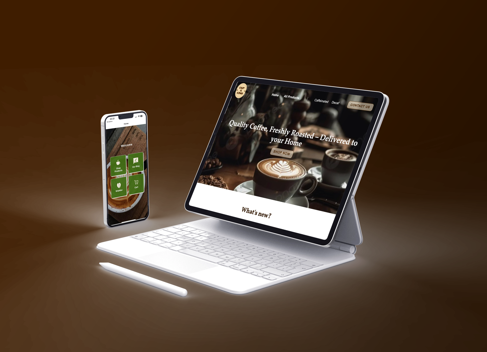
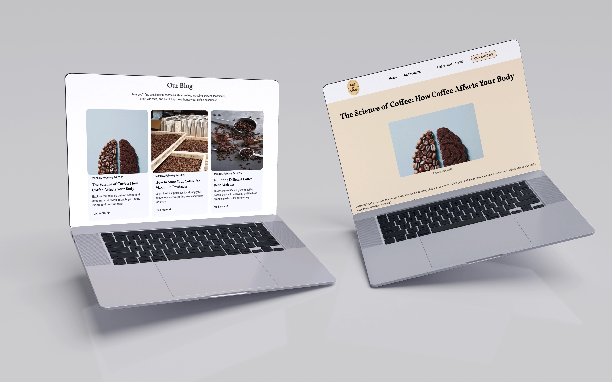

Context
Het Cupacino-project bestond uit het bouwen van een app en website voor een koffiewebshop via Webflow en React Native. Mijn focus lag volledig op development: werken met Webflow, werken met een CMS, API-calls integreren, states en props gebruiken, enzovoort.
Uitdaging
De grootste uitdaging in React Native was het correct beheren van de states en props bij het laden van dynamische content. Vooral bij het navigeren tussen schermen moesten data consistent blijven en updates realtime weergegeven worden. In Webflow voelde ik me beperkt doordat ik minder controle en vrijheid had dan in VS Code met HTML en CSS, waardoor het aanpassen van specifieke functionaliteiten soms omslachtiger en minder flexibel was dan ik gewend ben.
Mijn proces
Research & scope
- Doelgroep bepalen: koffieliefhebbers die online bestellen
- Competitie en referenties analyseren
- Features prioriteren voor examenvereisten
Design
- Wireframes in Figma voor homepage, productlist en productdetail
- Design system: kleuren, typografie en spacing
- Responsive layouts voor mobiel en desktop
Implementatie Webflow
- Collections aanmaken en voorbeelditems toevoegen
- Homepage met dynamic lists en collection bindings
- Publish en test live content
Implementatie App
- Expo + React Navigation opzetten
- API-calls implementeren en UI koppelen
- Cart state en AsyncStorage voor persistentie
Reflectie
Tijdens het Cupacino-project heb ik vooral technisch geleerd werken met Webflow en React Native. Ik heb inzicht gekregen in hoe je een website en app kunt koppelen aan een CMS, hoe je API-calls correct integreert en hoe states en props in React Native werken. Het project heeft me geleerd om oplossingsgericht te werken, fouten te debuggen en de samenwerking tussen front-end en CMS efficiënt aan te pakken.

